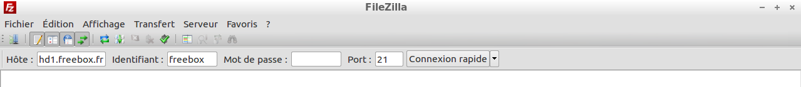

J’adore mon Lubuntu, cependant, il a une petite faiblesse sur les connexions réseau. En natif, le gestionnaire de fichiers PCManFM ne gère ni le FTP ni l’AFP (le protocole de Mac OS X).
Et sans FTP, c’est compliqué de transférer des fichiers vers la Freebox.
La première étape, bien sûr, c’est d’avoir autorisé les transferts ftp sur la console de la freebox (mais bon, ce n’est pas un blog sur la freebox, c’est expliqué partout all over ze web).
J’imagine que les solutions décrites sont applicables à la Freebox Revolution, mais comme je suis resté sur l’ancienne box, je n’ai pas pu tester, et puis c’est peut être encore plus simple.
1ère solution : ftp dans le terminal
En fait, pour moi, ça n’a pas été une solution, trop compliqué. Mais en théorie ça doit marcher. Ce premier test infructueux avec la commande ftp m’a cependant permis de trouver la 2ème solution, à savoir la commande lftp.
2ème solution : lftp dans le terminal
C’est pareil que ftp, mais en plus simple, et là, j’ai tout compris.
Ci dessous, tout ce qu'il y a à faire :
$ lftp freebox:@hd1.freebox.fr
lftp freebox:@hd1.freebox.fr:~> cd Disque\ dur/Video
cd ok, cwd=/Disque dur/Video
lftp freebox:@hd1.freebox.fr:/Disque dur/Video> put /adresse/fichier.avi
D'abord se connecter à lftp. Si vous avez mis un mot de passe pour la connection lftp à votre freebox, il faut l'ajouter entre ":" et "@".
Une fois sur le prompt lftp, ce que personnellement j’ai trouvé très simple, c’est de pouvoir se balader dans le répertoire de la Freebox avec les commandes du terminal, en particulier "cd" et le "\" (pour gérer les espaces dans le nom des répertoires). Dans l'exemple, je me suis positionné sur le répertoire Video du Disque dur de la Freebox.
Pour le transfert du fichier lui-même, il ne reste plus qu’à taper la commande put et de faire un copier – coller du fichier (adresse complète va s'afficher toute seule), le transfert démarre.
3ème solution : Filezilla
Ze solution. Avec Filezilla, tout est devenu encore plus simple et encore plus rapide.
Je suis venu à Filezilla par hasard, en créant la première version du blog sous Wordpress. Pour créer un blog avec Wordpress, il est expliqué partout qu’il faut utiliser Filezilla pour faire des transferts FTP du contenu du blog. Ah bon, Filezilla fait du transfert FTP sans peine. Mais pourquoi je m’embête avec la ligne de commande (en fait, je ne m’embête jamais avec la ligne de commande, mais bon, des fois autant aller au plus pratique quand même).
Sur l’écran d’accueil, il suffit de renseigner les informations comme illustrer ci-dessous :

La fenêtre de gauche est le navigateur de votre disque dur, celle de droite celle de la Freebox. Déployer le répertoire de la Freebox où vous souhaitez transférer le fichier. Il suffit alors de sélectionner le fichier de votre disque dur à transférer, et de faire un clic droit et de choisir "Envoyer".
Sur mon PC, c’est beaucoup, beaucoup, beaucoup plus rapide que lftp (transfert entre 1,7 et 2,3 Mo/s chez moi).
Evidemment, ça fonctionne aussi dans l’autre sens.
Enfin, les paramètres de la connexion sont sauvegardés dans connexion rapide, donc la 2ème connexion sera très simple.
Comments